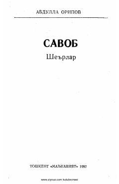

SAbdulla Oripovning falsafiy va ta'sirli she'rlari jamlangan to'plam.
Mazkur to'plamda O'zbekiston xalq shoiri Abdulla Oripovning dunyo va vaqt, inson ma'naviyati hamda go'zalligi haqidagi teran falsafiy she'rlari jamlangan. Shuningdek, to'plamdan shoirning eng yangi she'rlari ham o'rin olgan.